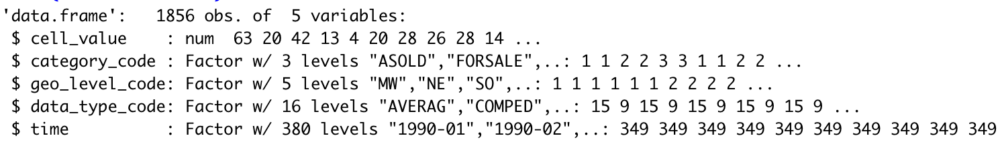
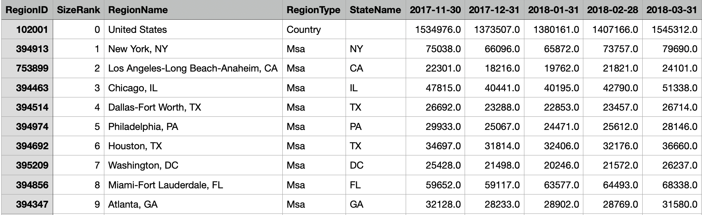
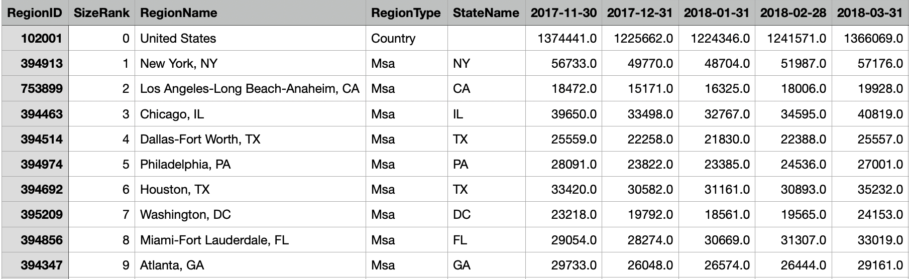
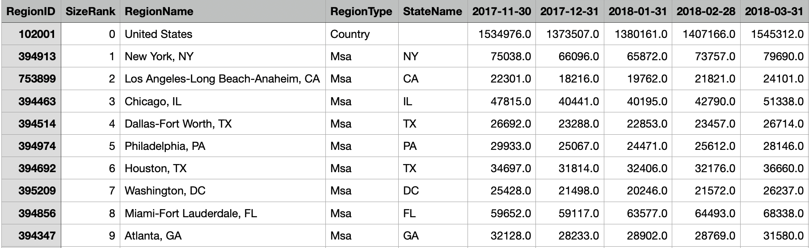
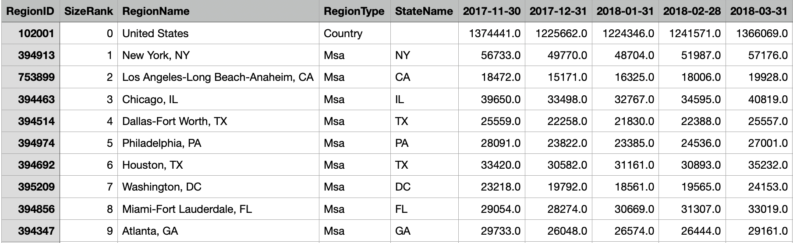

Demography Dataset
Demography datasets,labeled by regions, including Housing Vacancies and Homeownership (HV) and New Homes Sales (NHS), are converted from JSON to R data frame. Based on the characteristics of each dataset, data cleaning procedures are described below.
General Data Cleaning
| Name | Data cleaning procedures | Original Data Preview | Clean Data Frame Preview | Resources |
|---|---|---|---|---|
| Housing Vacancies and Homeownership |
|

|
|
|
| New Homes Sales |
|

|
|
- Housing Vacancies and Homeownership
- Convert to R data frame
- Drop extra levels
- Check for missing values
- Convert each column to correct type
- Cell_value column from factor to numbers.
- Remove NAs
- Remove rebundand columns and rows
- Remove rebundand columns
- Remove rebundand records (rows)
- Devide the dataset into two datasets
- Devide the data
- Remove rebundand columns
- Remove empty levels
- Check data quality
- Check if rates fall in the range 0-100.
- Check if regional values sum up as US values
- Visually check potential outliers
- New Homes Sales
- Convert to R data frame
- Drop extra levels
- Check for missing values
- Convert each column to correct type
- Cell_value column from factor to numbers.
- Remove rebundand columns and rows
- Remove rebundand columns
- Remove rebundand records (rows)
- Delete records with data_type_code start with E- as they indicate error type
- Add a column "Quarter" based on time
- Add the column
- Change the data type
- Remove empty levels
- Check data quality
- Check if regional values sum up as US values
This step convert the JSON file to data frame.
| Before | After |
|---|---|
|
|
|
Due to read in format, the column name was read as a level
of the factor. After change the first row to column name, empty level of the
column name should be removed.
For example:
After clean, the empty levels are dropped. See the summary beflow.
Using is.na() to check if there is any missing values.
There is no missing values in the original dataset.
The cell_value column contains the value of each record. This column should be numeric. However, after read the data, this column is factor (image above).
After conversion, the dataset summary is shown below.
In the last step, some NAs are introduced. This means there are some non-numeric values.
After removing those values, the dataset summery is shown below. Now the dataset has 8340 rows instead of 8344 rows in the original dataset.
In this step, time_slot_id, error_data and seasonally_adj columns are removed. time_slot_id is rebundand as it is same as time column.
Now the dataset has 5 columns instead of 8 columns(variables) in the original dataset.
In this step, dataset are trimmed based on the time variable. Only data after 2019 are kept.
Now the dataset has 890 rows instead of 8340 rows in the last version.
In this step, dataset is devided into two datasets based on the cell_value type, which is indicated in "category_code"
varible (rate or estimate).
Now the estimate dataset has 700 rows, while the rate dataset has 190 rows.
In this step, category_code (rate or estimate) is removed since the dataset has been devided based on this.
Now the datasets have 4 variables each.
Beacuse the dataset has beed revised, there are some empty levels containing no data. After remove those levels,
the dataset summary is shown below.
In the rate dataset, all cell_value should fall in 0-100. After checking, all values are from 0 to 100.
In this step, the regional values are sumed up to see if the sums matche the reported national
values. Due to rounding up operation, there may be some differences. This difference should be small.
After verification, the sums match the reported national value.
In this step, scatter plot is used to check if there is any potential
outlier in the data.
The figure shows the lines are smooth indicating they all close to each other. This
could be interpreted as there is no potential outliers.
This step convert the JSON file to data frame.
| Before | After |
|---|---|
|
|
 |
Due to read in format, the column name was read as a level
of the factor. After change the first row to column name, empty level of the
column name should be removed.
For example:
After clean, the empty levels are dropped. See the summary beflow.
Using is.na() to check if there is any missing values.
There is no missing values in the original dataset.
The cell_value column contains the value of each record. This column should be numeric. However, after read the data, this column is factor (image above).
After conversion, the dataset summary is shown below.
In this step, time_slot_id, error_data and seasonally_adj columns are removed. time_slot_id is rebundand as it is same as time column.
Now the dataset has 5 columns instead of 8 columns(variables) in the original dataset.
In this step, dataset are trimmed based on the time variable. Only data after 2019 are kept.
Now the dataset has 1856 rows instead of 18392 rows in the last version.

In this step, any records with data_type_code start with E- as they indicate error type are removed. In this analysis, data error will not be used.
Now the dataset has 1056 rows.
In this step, a column named "Quarter" is added to the dataset. This column is calculated based on the value of time. If
the time is Jan-Mar, Quarter is Q1; Apr-Jun, Quarter is Q2; Jul-Sep, Quarter is Q3; Oct-Dec, Quarter is Q4. There will be 4
quaters in each year. Meanwhile, the monthly data are kept for potential future analysis. The dataset after changing the type is shown below.
The new column is defaultly as "chr" type. In this step, "Quarter" column is changed to "factor" type.
Now the estimate dataset has 700 rows, while the rate dataset has 190 rows.
Beacuse the dataset has beed revised, there are some empty levels containing no data. After remove those levels,
the dataset summary is shown below.
In this step, the regional values are sumed up to see if the sums matche the reported national
values. Due to rounding up operation, there may be some differences. This difference should be small.
After verification, the sums match the reported national value.
Data Processing for Clustering analysis
| Name | Data cleaning procedures | Original Data Preview | Clean Data Frame Preview | Resources |
|---|---|---|---|---|
| HV-NHS combined data |
|
|

|
|

 


